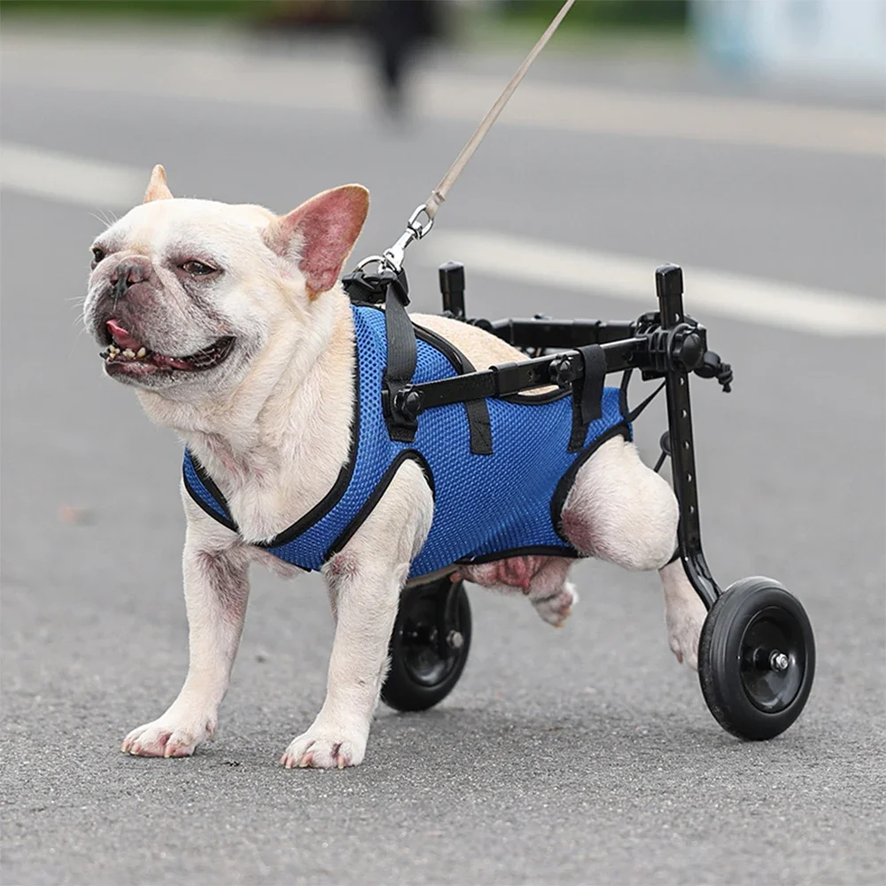

O projeto AbracePet é um projeto desenvolvido para fins acadêmicos pela Heloisa Teixeira Castilho, Jhonnatan
Mundario, Maria Eduarda Alvarenga Niro e Sofia Silva Costa.
O tema do nosso projeto foi desenvolvido pensando nas ONGs de animais, abrigos e até mesmo pessoas que
passam por dificuldades com seus pets, que muitas vezes não têm a devida visibilidade, optamos por
desenvolver um site que ajude essas pessoas, para o recebimento de ajuda financeiras, suprimentos.
Todos desse grupo amam animais, isso também influenciou na escolha do tema. Além disso, às vezes, alguma
pessoa quer adotar algum pet mas não encontra um facilmente. Ou quer doar um e acaba não encontrando pessoas
que queiram. Dessa forma, colocamos uma parte de adoção/doação de pets no site, que seriam postados pelos
próprios usuários, para facilitar esse processo. Inclusive, as pessoas podem filtrar os pets de suas
cidades.
Para a parte de empreendedorismo, fizemos uma loja. Essa loja seria para petshops venderem seus produtos e
também, nós mesmos vendermos nossos próprio produtos. Decidimos que parte do dinheiro das vendas seria
arrecadado para as nossos parceiros.
Para incentivar a doação voluntária e compras no nosso site, colocamos uma parte, na página inicial, que
reconheceria nossos maiores colaboradores do mês (ele atualizaria todo mês com as pessoas que mais
contribuíram), para ilustrar, colocamos fotos de 3 de nossos integrantes, e também, eles ganhariam descontos
e brindes na nossa loja.
Meu nome é Heloisa Teixeira Castilho e tenho 16 anos. Estudo na Etec Jacinto Ferreira de Sá em Ourinhos e curso Desenvolvimento de Sistemas. Minha parte no projeto foi de criar o tema, fazer a página inicial e a página "Sobre nós" e fazer a logo do projeto. Além disso, fui responsável pela documentação do grupo.

Ao comprar na loja, 25% do valor da compra é arrecadado para as instituições parceiras. Além disso os consumidores que mais contribuirem no mês, seja por doação ou compras, serão reconhecidos na página inicial e terão descontos e brindes exclusivos para resgatar na loja.